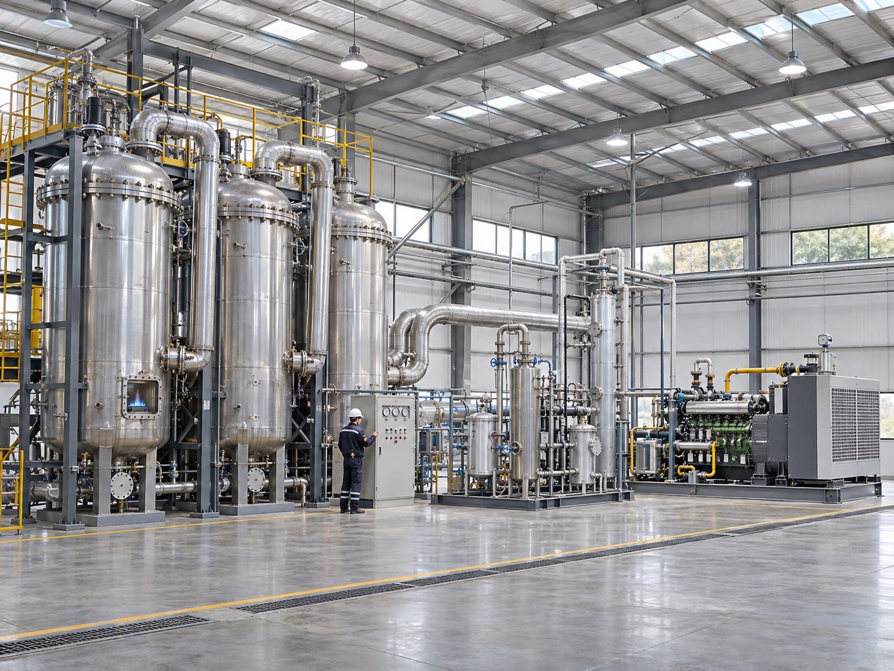
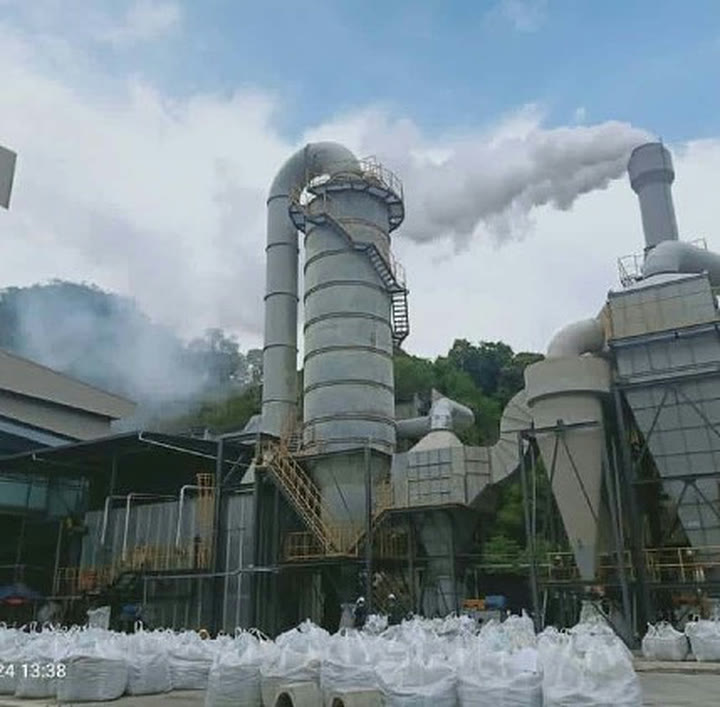

대표 인사말
“고객이 바라는 깨끗한 환경을 가장 먼저 생각하고, 그에 맞춰 기술을 끊임없이 발전시켜 왔습니다. 세계 어디서나 믿고 함께할 수 있는 회사가 되겠습니다.”
연기로 끝나는 소각장이 아닙니다.
쓰레기에서 시작하는 발전소입니다.

혁진에너지플랜트엔지니어링(HJE)은 45년 넘게 환경 분야 한 길만 걸어왔습니다. 폐기물을 완전히 태우고 배출가스는 깨끗하게 처리하며, 그 열로 만든 전기를 지역 사회와 산업 현장에 공급합니다.
한국과 말레이시아에서 저희 설비가 가동 중이며, 필리핀·인도네시아·베트남·캄보디아·코스타리카 정부로부터 사업 제안 요청을 받았습니다.
연혁 보기 →연혁
45년 넘게 걸어온 환경 기술 한 길
이탈리아 Lamborghini·Thermomec 버너 한국 대리점으로 창업
건타입 중유 버너 개발
지식경제부 음식물쓰레기 연료화 기술 개발 과제 선정
인천 매립지 RDF 시설에 건조·탈취 설비 공급
신형 RTO로 음식물쓰레기 악취 문제 해결
음식물쓰레기·가축분뇨 처리 및 친환경 처리 공법 특허 취득
말레이시아 정부와 랑카위 소각 플랜트 계약
대형 소각로 제조·수출 법인 H.J.E.C 설립
랑카위 플랜트 준공 · 저NOx 소각로 특허 · PHG 시스템 개발
동남아시아·중남미에서 신규 프로젝트 추진 중
기술
HJE 발전소는 이렇게 움직입니다

- 01
반입·선별
들어온 폐기물을 선별해 금속·캔·유리는 재활용으로 돌립니다.
- 02
건조·탈취
악취가 섞인 공기를 연소용 공기로 써서 250 °C 이상에서 분해합니다.
- 03
저NOx 연소
특허받은 3단계 재연소로 연료·공기 혼합과 산소 농도, 불꽃 온도를 조절합니다.
- 04
배출가스 정화
대기오염 방지 설비를 거치고, 굴뚝 배출가스를 실시간으로 측정합니다(CMS/TMS).
- 05
전기 생산
회수한 열로 터빈을 돌려 전력망과 산업 현장에 전기를 공급합니다.

소각 설비
생활·산업·의료 폐기물 소각로와 연소로 설비

발전 플랜트 엔지니어링
폐기물 에너지화 발전소의 설계·시공·운영 지원

PHG 발전 시스템
가스 버너와 제올라이트를 최적화한 열분해 수소 가스화(PHG) 발전소
- 음식물쓰레기·하수 폐수 처리
- 하수 슬러지 처리
- 백연 제거 설비
- 슬러지 건조기 (제철·제지·하수·가축분뇨)
- 폐유·메탄가스 연소 설비
- VOC·악취 제거용 RTO 설비
지속가능성
들어온 쓰레기는
전기가 되어 나가고,
묻을 것은 남지 않습니다.
태우는 만큼 매립지로 가는 쓰레기가 줄어듭니다. 금속과 유리는 태우기 전에 골라내 재활용하고, 남은 열은 전기로 만듭니다.
작동 원리배출가스 처리에 드는 약품, 일반 소각로 대비
같은 양의 폐기물을 태울 때, 일반 소각로 대비
특허받은 저NOx 연소 방식
깨끗하게 태우는 방법
나중에 걸러내지 않고, 처음부터 덜 만듭니다
대부분의 소각로는 먼저 태운 뒤 많은 약품으로 배출가스를 걸러냅니다. HJE 플랜트는 오염물질이 처음부터 적게 생기도록 설계하고, 남은 배출가스는 굴뚝에서 계속 측정합니다.


- 01
3단계 저NOx 연소
특허받은 버너가 가스를 3단계로 다시 태웁니다. 연료와 공기의 혼합, 산소 농도, 화염 온도를 조절해 질소산화물(NOx) 발생을 줄입니다.
- 02
약품은 1/30 이하
연소로를 나오는 가스가 이미 깨끗해서 배출가스 처리 약품이 다른 소각로의 1/30도 들지 않고, 처리 비용도 거의 없습니다.
- 03
악취를 정화에 활용
쓰레기 저장조와 건조기에서 나오는 암모니아 섞인 공기를 연소 공기로 넣어, 악취 성분을 250 °C 이상에서 분해합니다. 이 암모니아는 NOx를 줄이는 데도 쓰입니다. 디젤차가 요소수로 NOx를 줄이는 것과 같은 원리입니다.
- 04
폐수 약 1/30, 측정으로 확인
연소가 깨끗한 만큼 폐수도 다른 소각로의 약 1/30입니다. 굴뚝 배출가스는 굴뚝 자동측정기기(TMS, 해외 명칭 CEMS)로 계속 기록합니다.
프로젝트
사업 현장
완공한 플랜트와 현재 추진 중인 프로젝트입니다.

말레이시아 랑카위
말레이시아 정부가 발주한 생활·관광 폐기물 소각 시설입니다. 실패한 기존 시설을 대체했으며, 악취와 파리 문제를 해결했고 굴뚝 배출가스도 낮게 측정되고 있습니다. 2호기를 추가로 준비하고 있습니다.
- 처리 용량
- 100톤/일
- 준공
- 2019년
- 폐기물
- 생활폐기물

캄보디아
30년 BOT 방식의 생활폐기물 발전 플랜트입니다. 17,250가구 이상에 전기를 공급하고 35개 이상의 장기 일자리를 만듭니다.
- 처리 용량
- 100톤/일
- 사업 방식
- BOT · 30년
필리핀
산업폐기물 소각로와 발전 겸용 소각로
- 처리 용량
- 300톤/일 · 330톤/일
인도네시아
의료폐기물 처리 시설과 의료폐기물 발전 시설
- 처리 용량
- 500톤/일 · 250톤/일
베트남 · 코스타리카
랑카위 플랜트 이후 각국 정부로부터 사업 제안 요청을 받았습니다.
설치 실적
| 지역 | 발주처 | 폐기물·연료 | 처리 용량 | 주 계약사 |
|---|

언론 보도
랑카위 소각 플랜트, 악취와 파리 문제 해결
Kosmo! · 말레이시아 · 2021년 3월 7일
HJE 기술로 지은 이 플랜트는 실패한 기존 소각 시설을 대신해, 지금도 매일 랑카위섬의 생활·관광 폐기물을 처리하고 있습니다.
랑카위 프로젝트 →인증
세계에서도 엄격하기로 손꼽히는 한국의 배출 기준을 충족합니다.


협력사
국내 대표 엔지니어링 기업들과 함께해 왔습니다
- 삼성엔지니어링
- LG기계
- 현대중공업
- SK건설
- 현대엔지니어링
- 포스코ICT
- 본사
- 경기도 포천시 소흘읍 고모리 534
- 제2공장
- 부산광역시 강서구 녹산산업중로 35
- 해외 지사
- REBIO ALAM SEKITAR SDN. BHD., 말레이시아 쿠알라룸푸르